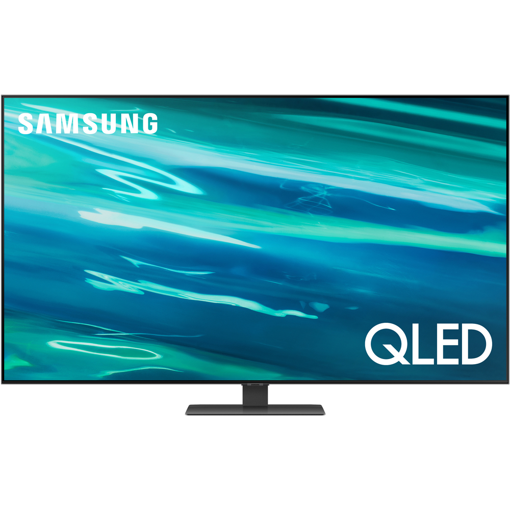

Kľúčové vlastnosti:
- Uhlopriečka: 139 cm (55 ")
- Ultra HD rozlíšenie: 3 840 x 2 160 px
- Procesor: α5 4K Gen4 AI
- IPS displej, Active HDR (HDR10 PRE, HLG PRO)
- Filmmaker MODE
- Frekvencia panelu: 50 Hz
- Podsvietenie Edge LED, lokálne stmievanie, široký farebný rozsah Nano Color, AI Upscaling
- ThinQ AI (Google Assistant, Amazon Alexa)
- Podpora Apple AirPlay 2 a HomeKit
- DVB-T2 / S2 / C, H.265 / HEVC
1000€
PANASONIC TX-24FS503E

- Popis
- 24palcový Panasonic TX-24FS503E je televízor, ktorý netradične kombinuje kompaktnú veľkosť pre použitie v menších miestnostiach, ako sú spálne, detské izby alebo kuchyne, so zaujímavou výbavou a nádherným obrazom. Za ním stojí predovšetkým HD Ready rozlíšenie, 800Hz technológia BMR IFC alebo podpora HDR, ktorá u dnešného moderného televízora nesmie chýbať pre detaily v tmavých a svetlých scénach.
- HD Ready LED TV, HDR
- Uhlopriečka 24""/61 cm
- Adaptive Backlight Dimming
- Režimy Šport a Hry
- VR-Audio True Surround
- my Home Screen 3.0
- Bluetooth Audio Link
- Quad-Core Pro
- IP Home Network (Control4/ Cretron)
- Hlasový sprievodca, TV Anywhere
- Popis
- UHD modely tohto modelového radu budú ladiť svojím bez rámečkovým dizajnom s každým interiérom a budú klenotom Vašej domácnosti. V balení nechýba vedľa bežného ovládača tiež Magický ovládač. Prepínať programy, vyhľadávať nový obsah a využívať ďalšie funkcie môžete jednoduchým kliknutím, ukázaním, posúvaním alebo pomocou hlasových príkazov. Ovládač Magic Remote je možné používať aj na ovládanie pripojených zariadení. Teraz strávite menej času vyhľadávaním v zložitých ponukách či hľadaním toho správneho ovládača.
- Uhlopriečka displeja 164 cm (65")
- UHD
- Rozlíšenie 3 840 × 2 160 pixelov
- HDR 10 – 1,07 miliardy farieb
- D-LED
- Jas 280 cd/m²
- Odozva 8 ms
- Široký pozorovací uhol 178°/178°
- Digitálny hrebeňový filter (DCF)
- Dynamické potláčanie šumu (DNR)
- Popis
- Televízor Philips je vybavený funkciami, aby využil plný potenciál formátu videa HDR10+. Úrovne kontrastu, farieb a jasu sú upravované na každom zábere. Či už sledujete obľúbený seriál, alebo nový filmový trhák, tiene budú hlbšie, svetlé povrchy žiarivejšie a farby vernejšie. Dolby Vision a Dolby Atmos. Obraz aj zvuk ako v kine.
- Diagonálny rozmer obrazovky (v palcoch): 58 palec
- Displej: 4K Ultra HD LED
- Diagonálny rozmer obrazovky (metrický): 146 cm
- Rozlíšenie panela: 3840 x 2160
- Pomer strán: 16:9
- Technológia spracovania obrazu: Technológia P5 Perfect Picture Engine
- Dokonalejšie zobrazenie
- Ultra vysoké rozlíšenie
- HDR10+
- Dolby Vision
- Popis
- V celkovom hodnotení je to to 4K televízor plný pokročilých funkcií s výbornou kvalitou obrazu. Ak chcete hľadať rozdiely voči úplným vlajkovým lodiam tak je to už spomenutý odraz svetla na displeji a je to pomerne hrubší televízor. Podporuje normu HDR10+, nie však Dolby Vision HDR. Dá sa uchytiť aj na stenu a diaľkové ovládanie je klasické bez napájania z okolitého svetla. Typická elektrická spotreba je 110 W, hmotnosť televízora je 18 kg.
- Uhlopriečka: 55" (138 cm)
- Rozlíšenie: 4K (3840 x 2160)
- Umelá inteligencia - Quantum Processor 4K
- Priame zadné podsvietenie
- Široké pozorovacie uhly
- 100% objem farieb
- Q HDR 1500 (HDR10 + / HLG )
- Supreme UHD Dimming
- Adaptívny obraz
- Motion Xcelerator Turbo+
Kľúčové vlastnosti:
1320€
SENCOR SLE 65US800TCSB

Kľúčové vlastnosti:
2050€
PHILIPS 58PUS8546/12
Kľúčové vlastnosti:
1020€
SAMSUNG QE55Q80A
Kľúčové vlastnosti:
1550€
proism kontaktujte nás ak potrebujete viac info